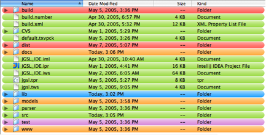
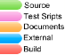

Joe Chavez
Advisor: C. Jo
Reviewer: T. Ryu
This CD contains the documents and project artifacts for the JGSL project for the Masters in Computer Science degree program as California State University, Fullerton.
back to Contents
The documents directory on the CD contains the project report and supporting documents.
back to Contents
The project directory on the CD contains the project implementation.


back to Contents
The tools directory on the CD contains the tools used to implement the project.
Tools - link to distribution file
back to Contents
back to Contents